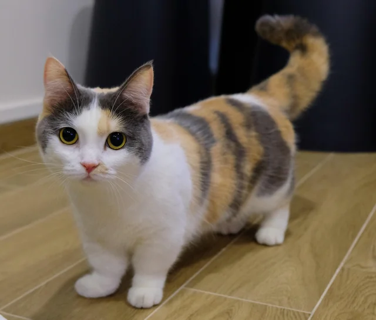

The Munchkin cat breed is the iconic little and short cat. This loving and friendly breed is a speedy bundle of joy [1], [2], [3], [4]!
Appearance
The Munchkin cat breed is a small size cat breed, weighing from 2kg to 4kg. It is typically shorthair, but there is a longhair version as well. This breed is known for its distinctive short legs. This signature feature makes their bodies appear disproportionately long, thus their nickname - the “Sausage Cat”. Their short legs are caused by a naturally occurring genetic mutation. Munchkins do not have any usual coat and eye color, it is their short legs and cute, little body that makes them memorable! Their coats come in various colors and patterns, as well as their eyes.
Personality
Even though this cat breed is a small and short one, they have a big personality! The Munchkin cat breed is a very brave, confident, and affectionate breed! Known for their social nature, friendliness, and playfulness! They love to play with dogs, other pets, and children. Munchkins are very intelligent and curious cats. Even though they can not make big leaps like other breeds, they can make small jumps and can still climb high places using their intelligent ways to do so, instead of big jumps. And to get a better view, they will often stand on their hind legs. This breed loves to run with their little legs, chase, and play with toys! Even though they are very social cats, enjoy companionship and deeply love their family, they are not very talkative. This breed will meow only when needed with their soft, songlike voice.
History
The Munchkin cat breed is relatively new, although their subtle presence has been recorded throughout many years and around the whole world. The first known record of a short-legged cat dates to 1944, when a British veterinary report noted four generations of healthy short-legged cats. The breed was later also recorded in 1956 in Russia and the 1970s in the USA. And even later, in 1983, a lady from Louisiana, USA, found and rescued a pregnant cat whose half of the kittens were short-legged. It is believed that those kittens are the official founders of the modern-day Munchkin cat breed that we know today. Munchkin cats are often compared to rabbits and ferrets, but the truth is that they are 100% felines. This unique breed got its name after the Munchkins from The Wizard of Oz. Today, The International Cat Association (TICA) and the Southern Africa Cat Council (SACC) are the only registries that currently accept Munchkin cats, and no further progress in the acceptance of this breed has been made since [1], [2], [3], [4].